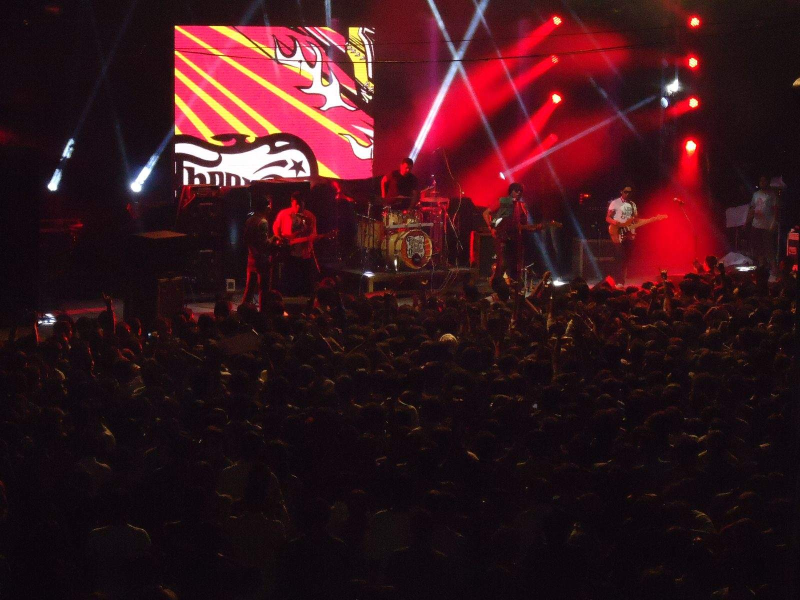

Festivals · Culture
Mood Indigo 2026 (IIT Bombay)
- Dates
- –
- Venue
- IIT Bombay, Powai
- Location
- Mumbai, India
- Format
- In-person
- Category
- Culture
- Industry
- Student culture festival
- Organiser
- Mood Indigo, IIT Bombay
- Expected attendance
- 150,000
- Official website
- https://moodi.org/
About
Dates are local to the host city (India Standard Time, UTC+5:30).
Topics: music, comedy, arts, competitions, concerts.
Official Mood Indigo site, history: 'Footfall 1,50,000+' (festival footfall as published by the organisers).